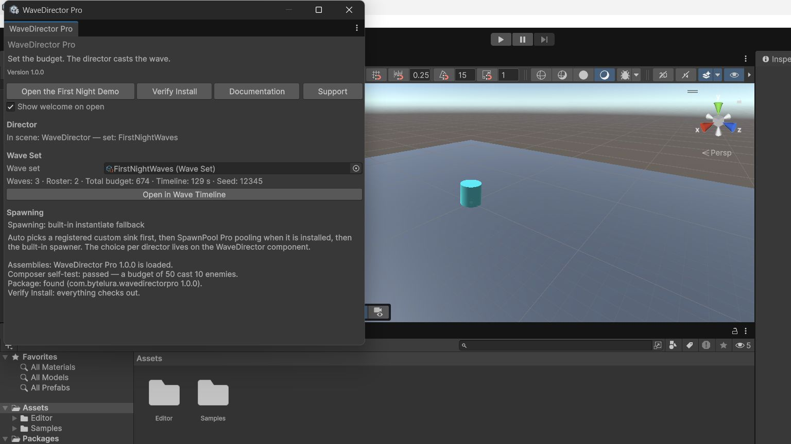

Installation and Setup
Expanded from the shipped Quick Start and the product specification.
Requirements and compatibility
- Unity 2022.3 LTS and Unity 6 are the product's targets.
- The package declares no package dependencies and works fully standalone.
- Importing the package adds nothing to your scene. Waves need a wave set and a director, and both are one action away in the home window.
- The runtime contains no editor code: a player build contains the director runtime and nothing else. The home window, the timeline, and the setup actions are editor-only.
The home window
Open Tools/ByteLura/WaveDirector Pro. From top to bottom it shows:
- Welcome block (expanded on first open, collapsible after; a "Show welcome on open" toggle persists your choice): product name, outcome line, version line, and the quick actions Open the First Night Demo / Verify Install / Documentation / Support.
- Director status: the scene's director if one exists — set name, spawning mode, and in Play Mode the live state, current wave, alive count, and queue remaining. If none exists, the Add Wave Director to Scene action appears here.
- Wave set: an object field for a wave set, its summary (waves, total effective budget, total timeline length, seed), a validation strip when the validator reports anything, and Open in Wave Timeline.
- Spawning: one status line in plain language naming which spawning path is active (see page 07), with a documentation link explaining the three paths.
- Footer: version plus the last Verify Install result in plain language.
With no wave set in the project, the window shows one explanatory line and two actions — Create a Wave Set and Open the First Night Demo — instead of an empty surface.
Verify Install
Verify Install confirms the package assemblies loaded, then runs a headless self-test composition against a throwaway in-memory wave set. It exercises the composer, the engine, and the standalone fallback path without touching your scene, and reports one plain-language line per check in the window footer.

Add Wave Director to Scene
This action creates the rig: one WaveDirector object carrying the director behaviour, and one Spawn Points group holding four points in a loose ring (radius 12) — placeholder placement that you drag into your level. The action is idempotent: running it again when a rig already exists adds nothing. Both setup actions are safe to re-run at any time.
Reset and removal
Stop on the director despawns the field and returns the engine to Idle. The package keeps no persistent project state beyond your own wave set assets, so there is nothing else to reset; deleting the rig is an ordinary scene delete, and removing the package removes nothing of yours.